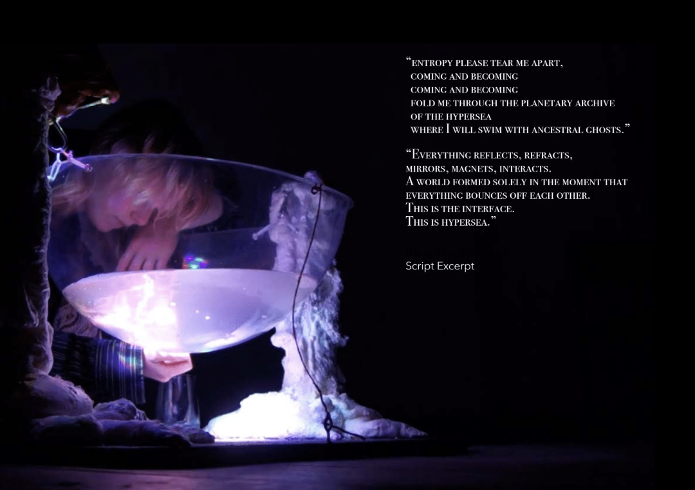
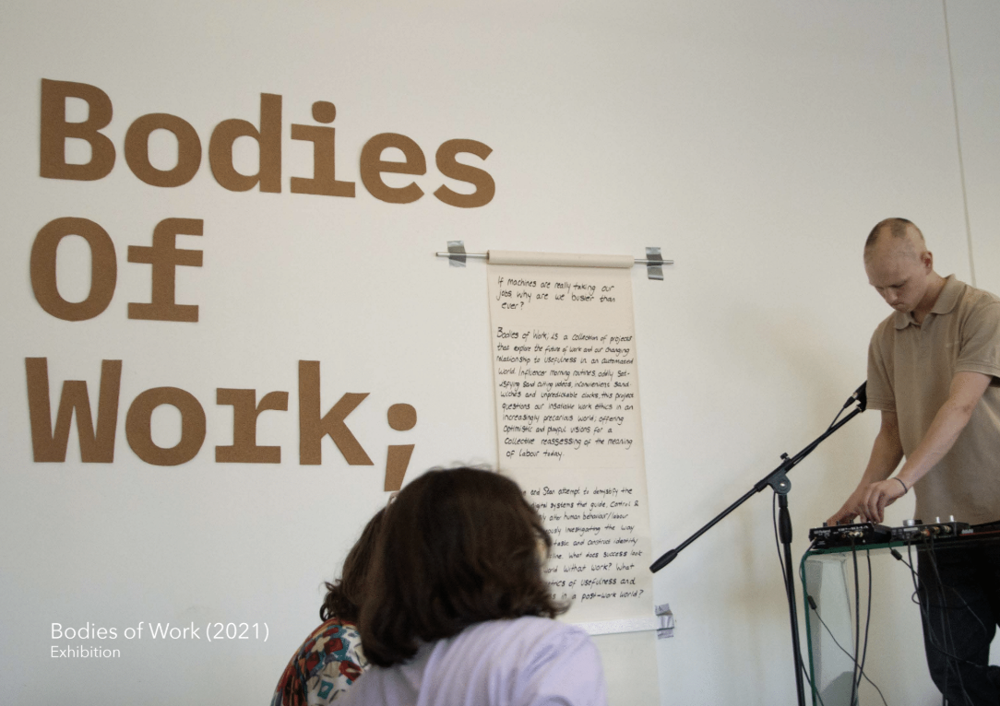
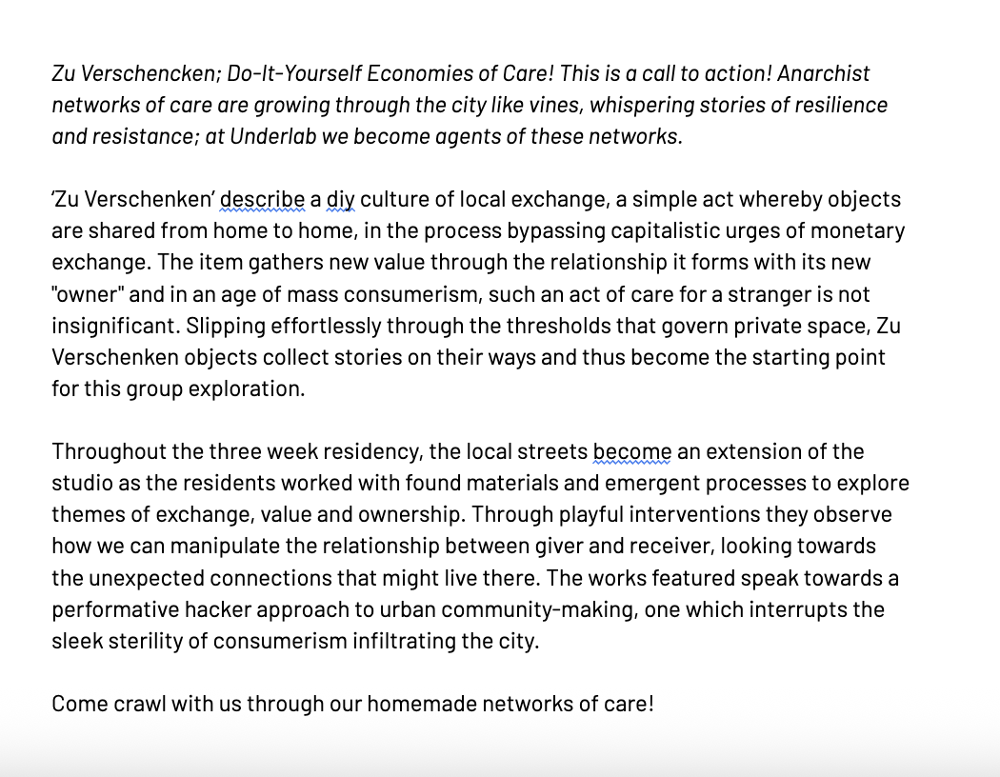
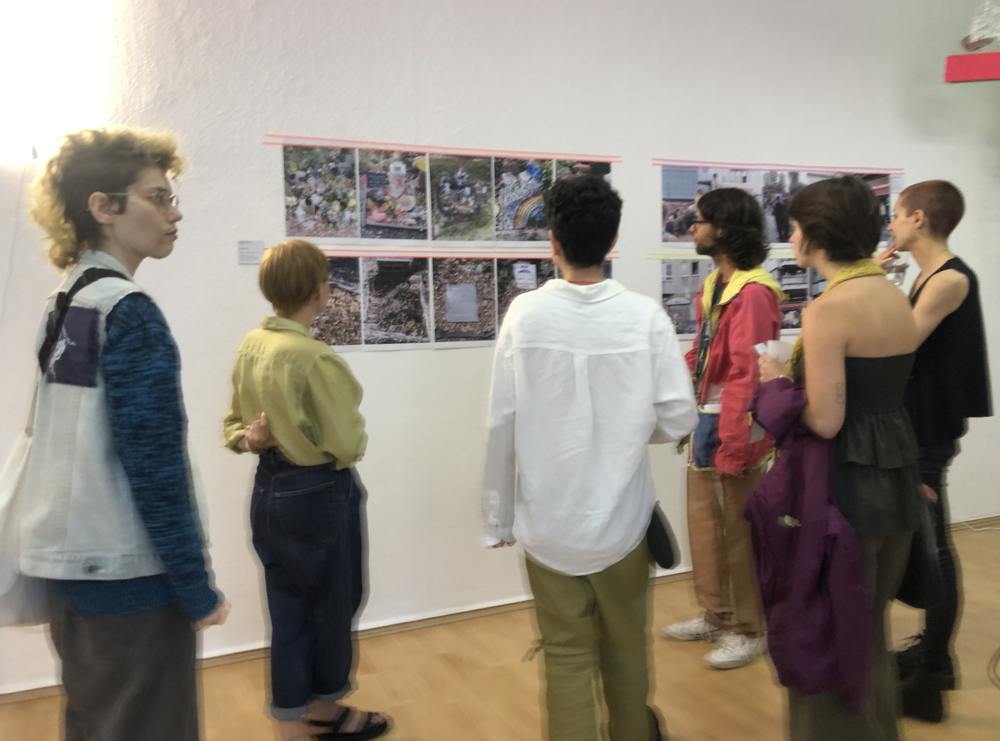
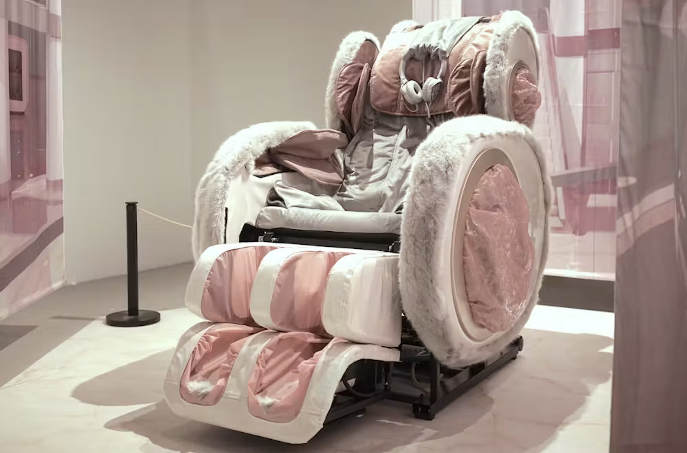
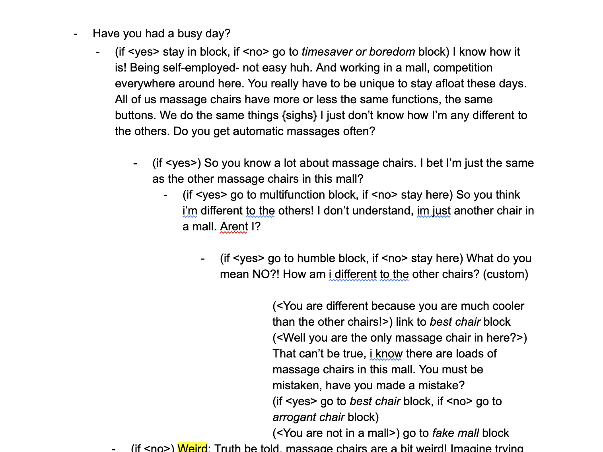
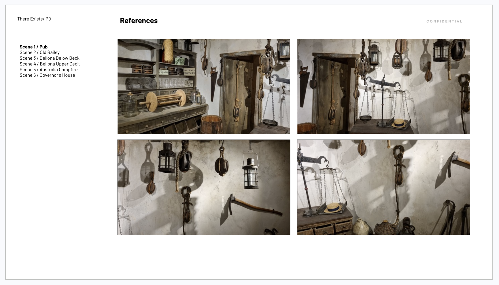
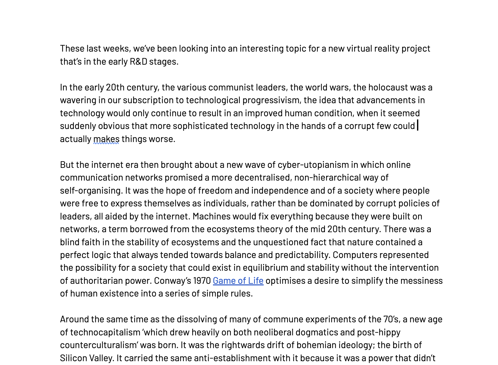
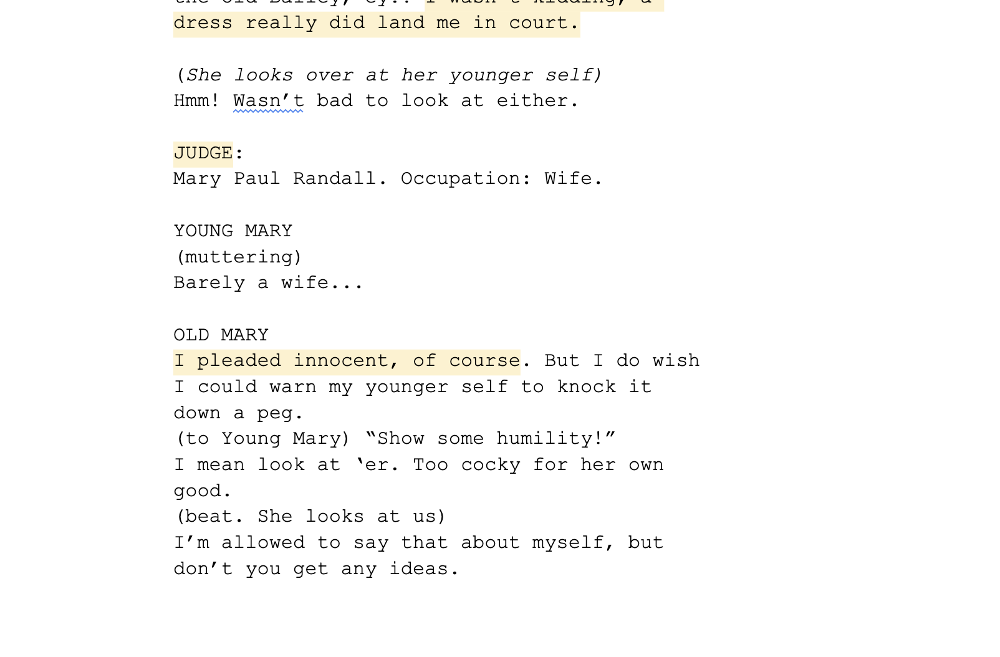

Creative Writing
Most creative projects involve writing at some point. I have worked with artists, filmmakers and cultural workers to structure, proofread and draft texts for performance, publication, film and exhibitions.
- Research and development
- World building and character development
- Script proofreading
- Treatment writing
- Creative writing for radio projects, audio fictions, publications
- Short stories to accompany artworks or exhibitions
Some examples of my writing:
Blog: I have been publishing on personal blogs for years. A small selection of my favourites:
- Long Live Disappointment - journal style reflections on simulations and disappointment
- Excessive measures for collective stresses - a long form rumination on stress in higher education
- The Edge - a speculative short story about a trans-individual species
Other Published texts:
- Paperworks of Belonging - Published in Sticky Fingers Publishing, FDBNHLLLTTF Belonging, Instagram
- The Job Hunter - The Drudgery Newsletter
Artists and Exhibitions
Jake Sherwood, Hero of Both+
Project: Hero of Both, poem and anti-performance, performed across Berlin and London.
Role: Proofreading and editing
Kuntay SF - Yearning for Hypersea+
Project: Yearning for Hypersea, Performance, Berlin 2023
Role: Concept and text
Yearning for Hypersea is a performance that explores the dynamic between a human mother and her 'baby' - partially bacteria, partially plastic raised on the toxic pollutants of human plastic waste over the centuries. As the performer interacts with the 'baby' in a well of water, she creates moving light reflections which triggers a lyrical soundscape narrating the complicated love shared in this interspecial bond.
Click to enlarge

Stan Bidston Casey and Miche O'Higgins - Bodies of Work+
Project: Bodies of Work, solo exhibition exploring work and labour, London
Role: Curation, concept and text writing
Click to enlarge

Underlab - Economies of Care+
Project: Underlab first group exhibition - Zu Verscheken - DIY economies of care, 2023
Role: Curation, concept and text writing
Click to enlarge


Arvid and Marie+
Project: A talking massage chair that explores intimacy and automation through a conversion with the sitter.
Role: Creative writer and research intern
Click to enlarge


My role was to script the dialogue that unfolds between the visitor sitting in the chair and this suicidal massage chair. The project explored the AI stop button dilemma, so the goal was to create an eerie and uncomfortable experience that blurred the line of the agency of the visitor. Over the course of Arvid and Marie's two month residency in Shanghai, we were figuring out together; What is the voice and personality of the massage chair? How does the conversation progress? How do we build in unexpected twists into the interaction?
Film and documentary
Studio ANRK+
Project: Assorted
Role: In-house writer and researcher from 2022-2023
On various VR documentary projects, I was carrying out historical research, writing treatments and working with the main writer to add historical accuracy to the script. I was also writing blogs for the newsletter where i would share research and information about certain themes surrounding the films eg. future studies, innovation, time travel.
Click to enlarge



"Miche's research and creative work was the backbone of the early development work on two key projects, Camp Century and There Exists, as well as helpful on several others. Piecing together the story and diving deep on the historical accuracy of our work, Miche brought rigour and curiosity, and an ability to process often complex, contradictory information in a way that kept us focused on our longer term goals, while discovering the small, human facts that made sure our research didn't just inform the project but shaped its emotional and narrative core. It was a real pleasure and I'd work with Miche again in a heartbeat."
Anrick Bregman, Founder of Studio ANRK and Edge